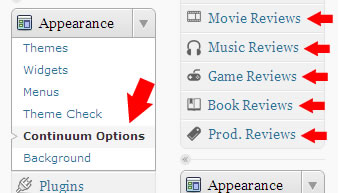
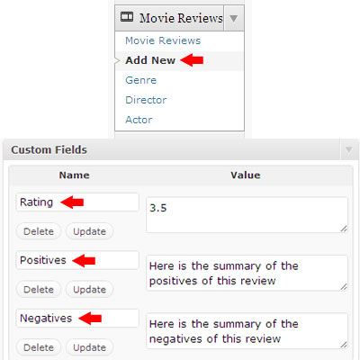

“Continuum” Documentation by “Outer Spice Web Company” v1.0
Created: 4/20/2011
By: Outer Spice Web Company
Email: bmac@outerspiceweb.com
Thank you for purchasing our theme. If you have any questions that are beyond the scope of this help file, please feel free to email via our user page contact form here. Also, you should read the Socket FAQ on ThemeForest since it explains how to do a lot of specific things. Thanks so much!
Table of Contents
- Getting Started
- HTML Structure
- CSS Files and Structure
- JavaScript
- PNG Files
- Sources and Credits
- PHP Code Explanation
- Detailed User Guide
A) Getting Started - top
Summary
Continuum is best used for magazine-style blogs, but has been built with all types of websites in mind. There are almost 200 options available to you in the theme options page, so you can really customize it to do exactly what you want it to do. However, even if you don't adjust any of the settings and just want to get your website up quickly, Continuum has been built to present your website in a professional manner by default. Following are the essentials for running Continuum, and then if you want to know about anything in more detail, you can find a wealth of information further down this page.
Quick Start Guide
 Installation - To get started, open the ContinuumTheme folder that you downloaded and find the folder named Continuum. Upload this folder into your wp-content/themes/ folder and then activate it in your Wordpress admin panel under "Appearance" >> "Themes". Once Continuum is activated, you'll notice all the custom post types appear in the right hand column (Movie Reviews, Music Reviews, etc.) as well as the Continuum Theme Options page under the "Appearance" menu, which is where all of the theme settings are.
Theme Options - The Continuum Theme Options page is separated into several tabs. The first tab contains all the information you need to use the options tabs. In addition, every single option is named and described in an intuitive way so that you always know what a setting will do.
Your Front Page - On the "Settings" >> "Reading" page for the "Front Page Displays" option, you can either choose "Your latest posts" or "A static page". If you select "A static page", you will want to create a page in Wordpress and select "Home Layout" for the Template. Regardless of the method you choose, all of the layout options for the home page layout are located on the theme options page.
jQuery Sliders - It is very simple to get posts to show up in the jQuery sliders. Simply tag posts "breaking" (no quotes) to get them to display in the breaking panel at the top of every page, and tag posts "spotlight" (no quotes) to get them to display in the main spotlight slider on the home page.
Menus - There are three custom menus that you need to setup, which are:
- Top Menu - The top menu bar which also houses the search box. This is a good place to put your pages.
- Small Menu - The right-aligned menu that sits directly below the header and directly above the larger menu with the white background. This is a good place to put special pages and/or your review pages.
- Main Manu - The full-width menu that sits directly above the main content wrapper. This is a good place to put your categories.
 Reviews - Continuum gives you five custom review post types: Movie, Music, Video Game, Book, and Product reviews. You can add reviews similarly to how you add new posts or pages. If you want to add a new Movie Review, for instance, go to "Movie Reviews" >> "Add New", and then fill it out just like a post with the following differences: A) Just like a post lets you select categories, a movie review lets you select genres, directors, and actors (each of which work just like post categories); B) To give your new review a rating, add a custom field named "Rating" with a value of 0 thru 5 (increasing at 0.5 increments); and C) give a brief summary of the positives and negatives of what you are reviewing using a custom field named "Positives" and a custom field named "Negatives", and for the value write the positive/negative text.
Now that you know how to add reviews, you need to know how to get them to show up on your site. Using our Movie Reviews example, add a new standard Wordpress page with a title of Movie Reviews. Select the "Reviews - Movies" template. You do not need to put anything in the page content box. All you have to do is add this page to one of your custom menus, and it will automatically find all of your movie reviews and list them on that page. Follow this same method for the other four review types.
Important: You can name the pages whatever you want, but they must have the following page slugs or else some of the widgets will not link to the correct places:
- Movie Reviews: movie-reviews
- Music Reviews: music-reviews
- Video Game Reviews: video-game-reviews
- Book Reviews: book-reviews
- Product Reviews: product-reviews
Compatibility
Continuum is built with valid XHTML. It is certified compatible with Google Chrome, Mozilla Firefox (3.5, 3.6, and 4), Safari, Opera, and Internet Explorer (7, 8, and 9). Note, however, that the "breaking" slider does not rotate in Opera, and the entire site is pretty slow in Internet Explorer 7. If you want to cater to Opera users, you can simply set the "breaking" slider to only display four posts, which will disable the sliding functionality and Opera users will never know the difference. Continuum was built using Wordpress version 3.1, and has been tested and verified with versions 3.0 - 3.1.1.
B) HTML Structure - top
Continuum is a 960px fixed-width theme with indented and intuitively spaced HTML. You will find in-line commenting allthroughout the HTML so that you can always figure out what section of the layout you are in. All of the pages in Continuum can be divided into two main types: A) Single pages, and B) List pages.
Single Pages
"Single Pages" refers to single posts and page templates. Every single page wraps the content in a div called "page-content" and either uses a "left-panel" and "right-panel" div structure (for pages with a sidebar) or just uses a "content" div to hold the main content (for the full-width template). There are two main sections of each page: A) the main content area, which is mentioned above, and B) everything below the main content, including the feed, the comments, and the latest panel. All page templates call the following files:
- header.php - The header file contains all the calls to the CSS and javascript files. It is where you will find all three menus (top menu, small menu, and main menu) as well as the "breaking" slider, logo, and header ad.
- feed.php - The feed contains the most recent posts for pages and the related posts for single post pages. The only exception to this is the review pages, which each call their own specific feed (e.g. feed-book-review.php, feed-movie-review.php, etc.). Note that for each of the feed pages there are three possible layouts, designated as A, B, and C (additionally the feed.php file contains a "D" layout, which displays latest by category).
- latest.php - The latest panel contains the latest posts from four categories that you specify in the theme options page.
- footer.php - The footer contains three custom widget areas that can be administered in the Wordpress widget page.
Archive Pages
"Archive Pages" refers to any page that lists a set of posts, such as category.php, archive.php, taxonomy-book-author.php, etc. These pages all wrap their content in a div called "feed-wrapper", which is designed to list posts in a 3 x 3 grid format (or 2 x 1, or 1 x 1, depending on the theme options settings). You will know these pages because they call a function to include a file from the inc/ folder. These files include the same files as the "Single Pages", but they are distinct because they don't actually display any content that you enter into a Wordpress post or page editor. Instead, they are custom built to list a particular type of post.
You will notice there is no "sidebar.php" file in Continuum. That is because there are almost 20 unique types of sidebars. Rather than creating 20 separate files - one for each type of sidebar - the sidebars are included directly in each of the pages that they are assigned to.
C) CSS Files and Structure - top
There is a blank custom.css stylesheet included in Continuum that is called after all other stylesheets. The purpose for this stylesheet is so you can do any edits you want to the style in this file instead of editing the default stylesheets so that when you update Continuum your CSS changes will not get overwritten. You can edit this file from within the theme editor in WordPress.
The main styles are located in style.css. It is separated into sections and commented well, like so:
/*************************************************
css reset and general setup
*************************************************/
The CSS reset which sets up the style for the theme.
/*************************************************
page backgrounds
*************************************************/
Specifies the images or colors to use for the background selected in the theme options page.
/*************************************************
top bar
*************************************************/
The top gray bar that houses the "top menu" custom menu and the search box (the menu is actually styled in a different file, see below)
/*************************************************
breaking
*************************************************/
The slider that displays posts tagged "breaking"etc, etc.
All other positioning and layout styles are located in the css folder. The main style.css file clarifies in-line which file inside the css folder styles which elements. There are six files inside the style folder:
- feed.css - styles the feed panels
- ie7.css - specific styles for IE7
- latest.css - styles the latest panel above the footer
- menus.css - styles all three of the custom menus
- shortcodes.css - styles all of the shortcodes you can include in a post or page
- spotlight.css - styles the spotlight slider that displays on the home page templates (all three variations)
D) JavaScript - top
Caulk imports 15 Javascript files, as follows:
- jQuery: jQuery is a Javascript library that greatly reduces the amount of code that you must write.
- jQuery UI: jQuery user-interface plugins which add functionality to the core jQuery framework.
- Easing plugin: the rotations between slides in the featured and popular areas are accomplished with the AnythingSlider jQuery plugin.
- Cycle: the jQuery plugin that rotates the testimonials.
- AnythingSlider plugin: the way that the AnythingSlider animates the rotations in these panels is accomplished with the Easing jQuery plugin.
- Nivo: one of the three possible spotlight sliders.
- Superfish: the jQuery plugin that creates fancy menu dropdowns.
- Cufon: the jQuery plugin for font replacement.
- Adelle: the js file that contains the Adelle font used by the cufon plugin for font replacement.
- Gentesque: the js file that contains the Gentesque font used by the cufon plugin for font replacement.
- TipTip: the js file that adds the hover functionality that explains what links and images do when clicked.
- Twitter plugin: the latest tweets are loaded via the Twitter plugin.
- Colorbox: the jQuery plugin used to pull Flickr images.
- jflickrfeed: another jQuery file that helps with Flickr.
- custom.js: the file that contains all of the js setup functions.
Note: The settings for most of the jQuery plugins are located in the custom.js file, but some of them are located in the header.php file since they require php variables from the theme options page. An explanation of what each setting does is commented in-line. You should only ever need to edit the javascript in the header.php file or the js/custom.js file. For instance, if you want to change the transition method used in the "breaking" slider, you would adjust this code in the header.php file:
jQuery('#breaking').anythingSlider({
easing: "easeInOutExpo", // Anything other than "linear" or "swing" requires the easing plugin
...
});
You could change it to something like this instead:
jQuery('#breaking').anythingSlider({
easing: "easeInOutBack", // Anything other than "linear" or "swing" requires the easing plugin
...
});
E) PNG and PSD Files - top
Every image used in the Continuum theme has a corresponding layered PNG file located in the main Continuum-Theme folder that you downloaded from ThemeForest, inside of the PNG folder. Look in the source of the code to find the image that you want to edit, and find the corresponding image file located in the PNG folder. Open the file in an image editor that is capable of editing PNG files, such as Adobe Fireworks, edit the file, and export the file to the images folder inside of the continuum theme folder (located inside the main ContinuumTheme folder that you downloaded from ThemeForest).
Additionally, to find the image you wish to edit using a more visual approach, open the PSD folder inside the main ContinuumTheme folder that you downloaded from ThemeForest and open the file that corresponds with the page that contains the image you wish to edit. Then, export the image as a PNG file and place it in the images folder inside of the continuum theme folder (located inside the main ContinuumTheme folder that you downloaded from ThemeForest).
F) Sources and Credits - top
I've used the following images, icons or other files as listed:
- Font: Gentesque (http://paulo-silva.kernest.com/fonts/gentesque)
- Font: Adelle (http://www.fontsquirrel.com/fonts/Adelle-Basic)
- Background Images: Silk Light Abstract (http://graphicriver.net/item/silk-light-abstract-background/95543)
- Background Textures: Grungy Abstract Squares (http://webtreats.mysitemyway.com/grungy-abstract-squares-photoshop-patterns/)
- Icons: Black & White Social Media Icon Set (http://graphicriver.net/item/36-black-white-social-media-icons/136661)
- Icons: Addictive Flavour (http://www.smashingmagazine.com/2010/04/15/the-ultimate-free-web-designer-s-icon-set-750-icons-incl-psd-sources/)
- Icons: Reflection (http://www.webdesignerdepot.com/2010/07/200-exclusive-free-icons-reflection/)
- Icons: Prime - MediaLoot (http://medialoot.com/item/medialoot-prime-60-detailed-vector-icons/)
- Icons: Function Icon Set (http://wefunction.com/2008/07/function-free-icon-set/)
G) PHP Code Explanation - top
The main functions.php file in the root continuum folder calls several PHP files (commented in-line) located inside the functions/ folder, which are as follows (in alphabetical order):
- custom.php - contains the functions which are widely used throughout the theme, such as custom menus and other functions which are standard to Wordpress theme initialization, featured image sizing, tinyMCE button add-ons for the post edit screen, post pagination, comment styling, additional profile fields, and functions that are used by the Continuum page templates like setting up the reviews, recent reactions scroller, get category ID, etc.
- load-templates.php - takes the functions that call files and presents them to the framework.
- meta-boxes.php - displays the custom field descriptions below the post content.
- post-types.php - sets up the custom post types of Movies, Music, Video Games, Books, and Products.
- shortcodes.php - creates all of the shortcodes that are used in the post and page edit screens.
- theme-options.php - calls the variables set in the Continuum theme options page.
- widgets.php - creates the custom sidebars and sets up all the custom widgets used in Continuum.
H) Detailed User Guide - top
Now that you know about the specs of Continuum, let's dive deeper into how it all works. If you are an experienced Wordpress user you were most likely able to get up and running using the Quick Start guide at the beginning of this document. IF you need a little more instruction on how to use Continuum, or if the Quick Start guide left you with further questions, this is where you'll find the answers. The Detailed User Guide also explains more features that weren't mentioned above, such as an explanation of the widgets, custom field values, and shortcodes that come with Continuum.
Reviews
You can be up and running with your own review site in three easy steps, detailed in this section. Continuum comes with five custom post types, each one a type of review:
- Movie Reviews
- Music Reviews
- Video Game Reviews
- Book Reviews
- Product Reviews
Step 1: Setup the custom taxonomies
You can use all of the reviews together, just a few of them, or none at all. By default they are all active, but you can disable them one by one in the theme options. Each review type has three custom taxonomies (think "categories") that you can assign items from. You can add items to each custom taxonomy in the review menus (pictured to the right) or directly on the add/edit review screen. Here is the list of custom taxonomies along with examples of what you could use for each one:- Movies
- Genre
- Action
- Comedy
- Drama
- ...
- Director
- Steven Spielburg
- Martin Scorcese
- Tim Burton
- ...
- Actor
- Robert Deniro
- Tom Cruise
- James Franco
- ...
- Genre
- Music
- Artist
- Arcade Fire
- The National
- Grizzly Bear
- ...
- Genre
- Indie Rock
- Experimental Rock
- Folk
- ...
- Type
- Album
- Show
- Music Video
- ...
- Artist
- Video Games
- Genre
- FPS
- Puzzle
- Role-Playing
- ...
- Platform
- PC
- Xbox
- PS3
- ...
- Developer
- Capcom
- Kaos Studios
- Bioware
- ...
- Genre
- Books
- Author
- John Grisham
- Stieg Larsson
- Max Brooks
- ...
- Genre
- Mystery
- Sci-Fi
- Post-Apocalyptic
- ...
- Publisher
- Bantam
- Doubleday
- Crown
- ...
- Author
- Products
- Product Category
- Audio
- Receivers
- Home Theater Speakers
- Car Subwoofers
- ...
- Video
- Video Cameras
- LED LCD TV's
- BluRay Players
- ...
- Automotive
- Sedans
- Trucks
- SUV's
- ...
- ...
- Audio
- Price
- $99
- $499
- $1999
- ...
- Brand
- Velodyne
- Sunfire
- Canon
- ...
- Product Category
As you can see demonstrated by the Product Category taxonomy, any of the custom taxonomies can have multiple-levels of categories added. You can even go more than two levels deep if you want. This is designed to help you classify whatever it is that you want to review and organize it in a way that presents as much content to your users as possible.
Step 2: Create the reviews
When adding a new review, enter the title and content, and then assign custom taxonomies from the right-hand column. Then, add a featured image which will display in the review listings as well as the single review page. Finally, give the review the necessary custom fields, which are described in the Continuum Custom Field Guide located on every review edit screen. They are additionally described below:- Rating - This is on a scale of 0 to 5 incrementing by 0.5 and will display either a corresponding number of stars or hearts. Stars is the default, but you can set a specific review to display hearts instead by adding the word "hearts" to the custom field value. Here are all of the acceptable values for the rating field: 0, 0 hearts, 0.5, 0.5 hearts, 1, 1 heart, 1.5, 1.5 hearts, 2, 2 hearts, 2.5, 2.5 hearts, 3, 3 hearts, 3.5, 3.5 hearts, 4, 4 hearts, 4.5, 4.5 hearts, 4, 4 hearts. ("hearts" can be capitalized or not, and it can be plural or singular. You can also similarly append "stars" to the rating, but it will do the same thing as just putting a number)
- Positives - This is the short summary of the positive aspects of the review (think "pros") and will display in the review overview box which sits to the right of the featured image on the single review page.
- Negatives - This is the short summary of the negative aspects of the review (think "cons") and will display in the review overview box which sits to the right of the featured image on the single review page.
- Award - This is an optional value that you can add if you want to call special attention to the review. Enter a text value here such as "Editor's Choice", "Top Pick", "Best Movie Of The Year", or whatever you want. IF you add this custom field, a small award icon will display at the top of the review on the listing pages and the award text will appear in red in the post box. It will also display on the single review page.
Step 3: Display the reviews on your site
Now that you have some reviews created, you'll need to display them on your site. You can inject reviews into your front, category, archive, authors, and search pages by ensuring that the "Inject Reviews" checkbox is checked in the Continuum Options >> Reviews >> General tag. Additionally, if you want to create a page to list posts from a specific review type, you'll need to create a page for each review type that you want to use. We'll use "Music Reviews" as an example. Go to Pages >> Add New and name the page "Music Reviews" or any other title that you want to house the reviews. Then, select "Music Reviews" as the page template and click Publish. You don't need to add any content to the page - it will know to display your music reviews. You can change the layout of the review listings for each review type in the theme options. For example, if you want your review listings pages to list two reviews per line with a sidebar, you would go to Continuum Theme Options >> Reviews >> General Settings and set the Review Listing Layout option to layout "B" (this will affect all five of the review types). Remember, all theme options pages are explained on the Getting Started tab of the theme options page, plus there is a short description next to each option in the options tabs.
In addition to creating the review page, you need to create a link to the page by adding it somewhere on your site. A good place to do this is the "Small Menu" custom menu. Go to Appearance >> Menus >> Custom Small Menu, add the page to the list, and click Save.
Custom Menus
Menus - There are three custom menus that are included in the header.php file of Continuum. The position and name of each of the menus is as follows:
- Top Menu - The top menu bar which also houses the search box. This is a good place to put your pages.
- Small Menu - The right-aligned menu that sits directly below the header and directly above the larger menu with the white background. This is a good place to put special pages and/or your review pages.
- Main Manu - The full-width menu that sits directly above the main content wrapper. This is a good place to put your categories.
By default these menus will display pages, pages, and categories, respectively. That means if you don't go in and setup the custom menus, you will have two menus listing your pages which you probably don't want. Go to "Appearance" >> "Menus" and click the plus to add a new menu. We'll use the Main Menu as our example. Name the new menu whatever you want, but it is recommended to follow the same naming convention already in place to help you remember which is which, so we suggest naming it something like "Custom Main Menu". Add any pages, posts, categories, or custom links from the panels on the left that you want to display in this menu, and then save it.
Next, find the Main Menu drop down box in the Theme Locations panel on the left and select the name of your new menu (e.g. "Custom Main Menu"), then click Save. The main menu will now display the items that you specifically added to it. Repeat this same process for the other two menus.
Widgets & Sidebars
Continuum comes standard with 11 custom widgets which extend the functionality of Continuum and 19 custom sidebars which allow you to place different widgets on different pages. Once you install the theme, the widgets and sidebars will automatically become available on the Appearance >> Widgets page. The custom widgets are all named beginning with "Continuum...". All of the widgets and sidebars have thorough descriptions that explain what they each do, but we will additionally list them in this section.
Widgets
- Continuum Email Subscribe - Displays a form for users to subscribe to your Feedburner feed via email. Here is a good article explaining how to find your feed name.
- Continuum Flickr Feed - Displays the thumbnails from your Flickr account feed.
- Continuum Floating Ad - Insert your adsense or HTML code for two 125px-wide ads that will float next to each other. Tip: you can add as many of these widgets as you want in order to create multiple ad panels on top of each other. Also, the width crops at 125px but the height does not crop, so you can use images of any height.
- Continuum Latest Reviews - Displays a single review type by most recent or highest rated. Add multiple widgets for each review type.
- Continuum Latest Review Tabs - Displays reviews by most recent or highest rated in a jQuery tabbed format.
- Continuum Latest Tweets - Displays your latest Tweets. Note: title, profile link, and timestamp settings will not affect the Spotlight Right widget area. Change the title of the Spotlight Right widget area via the Continuum Options.
- Continuum Page & Archive Tabs - Displays pages, categories, and archives in a jQuery tabbed format. Note: category and page lists are only styled up to 3 levels deep. You can display more than 3 levels of categories and pages if you want to, but anything deeper than the 3rd level will look as though it's part of the 3rd level itself. If you really do have more than 3 levels of categories, I salute you!
- Continuum Post Tabs - Displays posts, comments, and tags in a jQuery tabbed format.
- Continuum Recent Reactions - Displays your recent comments in a vertically scrolling list.
- Continuum Review Category Tabs - Displays review categories in a jQuery tabbed format.
- Continuum Unwrapped Text - Displays arbritrary text of HTML just like the standard Text widget, but this one does not include the header bar and wrapper style - just a blank canvas for content.
Sidebars
- Spotlight Right - These widgets appear in the right of the spotlight area. Leave this panel blank to display the Recent Reactions comment scroller.
- Sidebar Feed - These widgets appear in the right sidebar of the feed (if specified in the Continuum options page)
- Sidebar Default - This is the default sidebar that will appear on every page (unless specified differently in the Continuum options page)
- Sidebar Page - This is the sidebar that will appear only on pages (if specified in the Continuum options page)
- Sidebar Category - This is the sidebar that will appear only on a category listing page (if specified in the Continuum options page)
- Sidebar Comments - These widgets appear in the right sidebar of the comments section.
- Sidebar Archive - These widgets appear in the right sidebar of the archive pages.
- Sidebar Auythor - These widgets appear in the right sidebar of the author pages.
- Sidebar All Reviews - These widgets appear in the right sidebar of all review pages.
- Sidebar Movie Reviews - These widgets appear in the right sidebar of the movie reviews pages.
- Sidebar Music Reviews - These widgets appear in the right sidebar of the music reviews pages.
- Sidebar Game Reviews - These widgets appear in the right sidebar of the video game reviews pages.
- Sidebar Book Reviews - These widgets appear in the right sidebar of the book reviews pages.
- Sidebar Product Reviews - These widgets appear in the right sidebar of the product reviews pages.
- Sidebar Search - These widgets appear in the right sidebar of the search results pages.
- Share Panel - This is the widget panel that appears inside the Share box on single post pages.
- Footer Left - These widgets appear in the left panel of the footer.
- Footer Middle - These widgets appear in the middle panel of the footer.
- Footer Right - These widgets appear in the right panel of the footer.
Shortcodes
Continuum comes with 68 total shortcodes that do anything from create a styled button to group content into jQuery tabs to show your pre-defined sign-off text at the end of each post. In addition to offering these shortcodes, Continuum makes it easier than other themes by adding buttons for each shortcode in the visual editor toolbar as shown in the image above. That way, you don't have to remember what the shortcodes actually are. However, we will list them here so you have a reference, especially since you won't always necessarily use the visual editor toolbar to insert shortcodes. Remeber, you can add shortcodes whether you are viewing the Visual or the HTML editor. Here is a table of shortcodes by name, code, description, and corresponding button on the visual editor:
| Name | Shortcode | Description | Button |
|---|---|---|---|
| Dropcap | [dropcap]...[/dropcap] | Use on first letter of paragraph to make it larger |  |
| Divider | [divider] | Adds a light grey dividing line with spacing above and below | |
| Quote | [quote]...[/quote] | Indents text inside a styled quote box | |
| Left Pullquote | [pullquote_left]...[/pullquote_left] | Floats a block of text inside a styled quote box to the left of the content | |
| Right Pullquote | [pullquote_right]...[/pullquote_right] | Floats a block of text inside a styled quote box to the right of the content | |
| Dark Box | [box_dark]...[/box_dark] | Wraps content inside a styled box with light text on dark background | |
| Light Box | [box_light]...[/box_light] | Wraps content inside a styled box with dark text on light background | |
| Simple Toggle | [toggle_simple title="Title" width="Width"]...[/toggle_simple] | Displays the text inside the title attribute with a plus icon that, when clicked, toggles display of the rest of the content within the shortcode using a jQuery transition. You only need to include the width if you want the toggle to have a width other than 600px. | |
| Box Toggle | [toggle_box title="Title" width="Width"]...[/toggle_box] | Same as Simple Toggle but additionally wraps the toggle in a styled box | |
| Tabs |
[tabgroup]
|
Wraps content into separate styled tabs that, when clicked, tab between content using a jQuery transition. Important: you can only add one Tabs shortcode to a page, or else the tab functionality will break (will not affect tabbed widgets in the sidebars) | |
| Signoff | [signoff] | Adds the text from the Signoff option (theme options >> miscellaneous tab) inside a styled box with a nice "info" icon | |
| Columns | Divides content into columns of varying widths | ||
| One Third | [one_third]...[/one_third] | ||
| One Third Last | [one_third_last]...[/one_third_last] | ||
| Two Thirds | [two_third]...[/two_third] | ||
| Two Thirds Last | [two_third_last]...[/two_third_last] | ||
| One Half | [one_half]...[/one_half] | ||
| One Half Last | [one_half_last]...[/one_half_last] | ||
| One Fourth | [one_fourth]...[/one_fourth] | ||
| One Fourth Last | [one_fourth_last]...[/one_fourth_last] | ||
| Three Fourths | [three_fourth]...[/three_fourth] | ||
| Three Fourths Last | [three_fourth_last]...[/three_fourth_last] | ||
| One Fifth | [one_fifth]...[/one_fifth] | ||
| One Fifth Last | [one_fifth_last]...[/one_fifth_last] | ||
| Two Fifths | [two_fifth]...[/two_fifth] | ||
| Two Fifths Last | [two_fifth_last]...[/two_fifth_last] | ||
| Three Fifths | [three_fifth]...[/three_fifth] | ||
| Three Fifths Last | [three_fifth_last]...[/three_fifth_last] | ||
| Four Fifths | [four_fifth]...[/four_fifth] | ||
| Four Fifths Last | [four_fifth_last]...[/four_fifth_last] | ||
| One Sixth | [one_sixth]...[/one_sixth] | ||
| One Sixth Last | [one_sixth_last]...[/one_sixth_last] | ||
| Five Sixths | [five_sixth]...[/five_sixth] | ||
| Five Sixths Last | [five_sixth_last]...[/five_sixth_last] | ||
| Small Buttons | Adds a small linkable button to the page | ||
| Light Grey Button | [button link="URL" variation="lightgrey"]...[/button] | ||
| Grey Button | [button link="URL" variation="grey"]...[/button] | ||
| Dark Grey Button | [button link="URL" variation="darkgrey"]...[/button] | ||
| Black Button | [button link="URL" variation="black"]...[/button] | ||
| Slate Button | [button link="URL" variation="slate"]...[/button] | ||
| Blue Button | [button link="URL" variation="blue"]...[/button] | ||
| Sky Button | [button link="URL" variation="sky"]...[/button] | ||
| Green Button | [button link="URL" variation="green"]...[/button] | ||
| Moss Button | [button link="URL" variation="moss"]...[/button] | ||
| Red Button | [button link="URL" variation="red"]...[/button] | ||
| Rust Button | [button link="URL" variation="rust"]...[/button] | ||
| Brown Button | [button link="URL" variation="brown"]...[/button] | ||
| Pink Button | [button link="URL" variation="pink"]...[/button] | ||
| Purple Button | [button link="URL" variation="purple"]...[/button] | ||
| Large Buttons | Adds a large linkable button to the page | ||
| Light Grey Button | [button link="URL" variation="lightgrey" size="large"]...[/button] | ||
| Grey Button | [button link="URL" variation="grey" size="large"]...[/button] | ||
| Dark Grey Button | [button link="URL" variation="darkgrey" size="large"]...[/button] | ||
| Black Button | [button link="URL" variation="black" size="large"]...[/button] | ||
| Slate Button | [button link="URL" variation="slate" size="large"]...[/button] | ||
| Blue Button | [button link="URL" variation="blue" size="large"]...[/button] | ||
| Sky Button | [button link="URL" variation="sky" size="large"]...[/button] | ||
| Green Button | [button link="URL" variation="green" size="large"]...[/button] | ||
| Moss Button | [button link="URL" variation="moss" size="large"]...[/button] | ||
| Red Button | [button link="URL" variation="red" size="large"]...[/button] | ||
| Rust Button | [button link="URL" variation="rust" size="large"]...[/button] | ||
| Brown Button | [button link="URL" variation="brown" size="large"]...[/button] | ||
| Pink Button | [button link="URL" variation="pink" size="large"]...[/button] | ||
| Purple Button | [button link="URL" variation="purple" size="large"]...[/button] | ||
| Lists | Wraps around a list to give it a different bullet | ||
| Fancy List | [fancylist]bullet list[/fancylist] | Bullets become black minimal arrows | |
| Arrow List | [arrowlist]bullet list[/arrowlist] | Bullets become green standard arrows | |
| Check List | [checklist]bullet list[/checklist] | Bullets become checkmarks | |
| Star List | [starlist]bullet list[/starlist] | Bullets become stars | |
| Plus List | [pluslist]bullet list[/pluslist] | Bullets become pluses | |
| Heart List | [heartlist]bullet list[/heartlist] | Bullets become hearts | |
| Info List | [infolist]bullet list[/infolist] | Bullets become info icons | |
Note: "..." indicates where you should put your content inside of the shortcode. For Lists, where it says "bullet list", put a regular bulleted or numbered list.
Page Templates
Continuum comes with nine page templates that you can assign to a page using the Page Attributes >> Template drop down when editing a page. Some of them have already been mentioned in this document, but we will list them again here so that all of the information on page templates can be in one place:
- Default Template - Displays page content on the left, with a sidebar on the right, "The Feed" below the page content, and "The Latest" panel above the footer. You can specify a Unique Pages Sidebar, hide "The Feed", and hide "The Latest" panel in Continuum Theme Options >> Page Layouts >> Other Pages. You can also adjust settings for individual pages using custom fields (see the Continuum Custom Field Guide for options - located on the page edit screen)
- Authors Page - Lists all authors inside styled panels on the left, with a sidebar on the right, and "The Latest" panel above the footer. You can specify a Unique Authors Sidebar and hide "The Latest" panel in Continuum Theme Options >> Page Layouts >> Other Pages. You do not need to enter anything for the page content.
- Full Width - Same as Default Template except it does not display the sidebar on the right. Uses the same settings from the Continuum Theme Options as the Default Template.
- Home Layout - Displays the Spotlight slider at the top of the page, followed by "The Latest" panel, and then "The Feed". You can adjust settings for this template in Continuum Theme Options >> Front Page.
- Reviews - Books - Displays latest posts from the Book Reviews post type in a grid format. You can adjust settings for this template in Continuum Theme Options >> Reviews >> General Settings. You do not need to enter anything for the page content.
- Reviews - Movies - Displays latest posts from the Movie Reviews post type in a grid format. You can adjust settings for this template in Continuum Theme Options >> Reviews >> General Settings. You do not need to enter anything for the page content.
- Reviews - Music - Displays latest posts from the Music Reviews post type in a grid format. You can adjust settings for this template in Continuum Theme Options >> Reviews >> General Settings. You do not need to enter anything for the page content.
- Reviews - Products - Displays latest posts from the Product Reviews post type in a grid format. You can adjust settings for this template in Continuum Theme Options >> Reviews >> General Settings. You do not need to enter anything for the page content.
- Reviews - Video Games - Displays latest posts from the Video Game Reviews post type in a grid format. You can adjust settings for this template in Continuum Theme Options >> Reviews >> General Settings. You do not need to enter anything for the page content.
Tips & Additional Info
This section gives helpful tips and additional information for using Continuum, including specific nuances and quirks that affect the general functionality of Continuum which might not be obvious after having read the other sections of this guide.
- Posts per page - The setting on the Settings >> Reading page for "Blog pages show at most" does not affect the number of posts shown on any of the pages in Continuum. Rather, there are several places in the Continuum Theme Options for specifying "posts per page" for specific sections of the theme. Settings are each described on the options page. However, this setting must be set to the same number as the Posts Per Page setting in Continuum Options >> Page Layouts >> Archive Pages and Category Archive Pages.
- Permalinks - Because of the way the Continuum feed framework works, permalink settings cannot be default. If permalinks are set to the default setting, some of the pages may not display correctly.
- Authors page - Don't forget to add the authors page to one of your custom menus so users can see your list of authors. This requires that you create a page and give it the Authors Page template (you can name this page whatever you want - we recommend "Contributors" or "Authors").
- Review Labels - You can change the text of the label for the Positives and Negatives for reviews for each review type. So, for instance, for products you can have "Pros" and "Cons", and for movies you can have "The Good" and "The Bad". See theme options for further details.
- Review Page Slugs - Remember, you must follow a strict naming convention for your review page slugs. The slugs for each of the review types must be as follows: movie-reviews, music-reviews, video-game-reviews, book-reviews, product-reviews. If you do not give them the correct slugs, some areas of the theme will not link to the correct places, such as the review sidebar widgets.
- Ads - Continuum has an extensive ad framework built in. For the ads, it is important to note that you must enter HTML into the ad box, not simply an image URL. See theme options for further details.
- Random Article Button - The random article button to the right of the main menu loads a random article from your regular posts. It is not able to load a random review in this version.
- Social Links - You enter your Twitter, Facebook, Flickr, and RSS feed information in Continuum Theme Options >> Miscellaneous. However, for the Continuum Email Subscribe widget, you enter your Feedburner Feed Name directly in the widget settings.
- Custom Fields - there are a wealth of custom fields available so you can customize individual pages. Every post, page, and review edit screen has a Continuum Custom Field Guide that explains each and every custom field available.
- Rebuilding Thumbnails - Continuum automatically resizes and crops your images into several different sizes so that there will be an appropriately sized image to fit all of the various thumbnail areas. After installing Continuum, any image you upload will be appropriately sized into all the various sizes. However, if you are installing Continuum onto an existing WordPress installation with images previously uploaded, the correct sizes for your images will not exist to suit Continuum. Not to worry, there is a plugin that you can install that will fix all of your previously uploaded images. Install the AJAX Thumbnail Rebuild plugin, located here: http://wordpress.org/extend/plugins/ajax-thumbnail-rebuild/. Once you install it, run the plugin and it will automatically resize all of your images. If you have a large amount of images, just let it run until it's finished as it may take some time to complete.
Once again, thank you so much for purchasing this theme. We would be glad to help you if you have any questions relating to this theme. No guarantees, but we'll do our best to assist. If you have a more general question relating to the themes on ThemeForest, you might consider visiting the forums and asking your question in the "Item Discussion" section.
Outer Spice Web Company